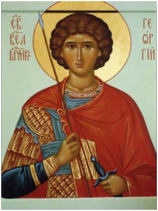

|
Яко пленных свободитель и нищих защититель, /
немощствующих врач, царей поборниче, /
победоносче великомучениче Георгие, /
моли Христа Бога / спастися душам нашим
Тропарь,глас 4
Георгий Победоносец - наиболее прославленный и наиболее популярный святой - покровитель православного воинства, изображение которого широко распространено на иконах и хоругвях, орденах и медалях, памятных знаках и другой воинской символике. Святой великомученик Георгий Победоносец родился в Каппадокии ( Малая Азия) в христианской семье. Его отец принял мученическую кончину за Христа, когда Георгий был еще ребенком. Мать, владевшая имениями в Палестине, переселилась с сыном на свою родину и воспитала его в строгом благочестии
Когда нечестивый царь Диоклитиан начал преследовать и убивать верующих во Христа, святой Георгий, отвергнув всякий страх человеческий и имея в себе только страх перед Богом, явился к царю, заседающему со своими советниками, и смело обличил всех их в злочестии, говоря: “...Иисус Христос — единый Бог, един Господь во славе Бога Отца, Которым все сотворено, и все существует Духом Его Святым. Или вы сами познайте истину и научитесь благочестию, или не смущайте безумием вашим познавших истинное благочестие"
Тогда царь стал уговаривать Георгия, чтобы он отрекся от Христа, но святой сказал:
“Никакой пользы не получают те, кто обольщен временными наслаждениями, твои соблазны не ослабят моего благочестия, и никакие муки не устрашат душу мою и не поколеблют ума моего”.
Эти слова святого Георгия привели царя в неистовство, и он повелел своим оруженосцам колоть Георгия копьями. Но как только копье коснулось тела святого, железо тотчас стало мягким и согнулось. Уста же мученика исполнились хваления Бога.
Введя святого Георгия в темницу, воины распростерли его на земле и положили ему на грудь тяжелый камень. Святой же все это терпел, непрестанно воздавал благодарение Богу. На следующий день царь спросил его, не отречется ли он от Христа. Святой Георгий, угнетенный тяжелым камнем, едва мог проговорить:
“О царь, неужели ты думаешь, что я после столь малого мучения отвернусь от веры своей. Скорее ты изнеможешь, мучая меня, нежели я, мучимый тобою”.
Тогда царь Диоклитиан велел принести великое колесо, под которым были помещены доски, истыканные железными остриями. На том колесе царь велел привязать обнаженного мученика и, вращая колесо, срезать все его тело. Святой Георгий, разрезаемый и разрываемый на части, доблестно переносил свои муки. Сначала он молился Богу громким голосом, затем тихо, про себя благодарил Бога, не испустив ни одного стенания, а пребывая как спящий или бесчувственный.
Тогда царь решил, что Георгий умер, и велел было отвязать его от колеса. Но вдруг затемнился воздух, прогремел страшный гром и многие услышали глас свыше:
“Не бойся, Георгий, Я с тобою”.
Появилось сияние, великое и необычное, и Ангел Господень во образе юноши прекрасного и ясноликого, озаренного светом, показался стоящим у колеса и, возложив руку на мученика, сказал “Радуйся”. И никто не смел приступить к колесу и к мученику, пока продолжалось видение. Когда же ангел исчез, Георгий сошел с колеса, освобожденный ангелом и исцеленный им от ран, и возблагодарил Господа.
Но злой царь не вразумился чудом Божиим и приказал дальше мучить святого Георгия. Но Георгий был непоколебим, а только молился Богу: “Прояви, Господи, милость Твою на мне и сохрани путь мой в вере Твоей, чтобы везде прославилось имя Твое пресвятое”.
Когда же царь пришел в удивление от того, что Георгию не вредили никакие мучения, святой Георгий сказал ему: “Знай, царь, что я не чувствую муки, потому что спасаюсь призыванием Христа и Его силою”.
И повелел царь мученику, чтобы он для показания силы Бога своего воскресил мертвого. И сказал ему святой: “Бог мой, сотворивший все из ничего, имеет силу воскресить через меня мертвеца”. — И, преклонив колена, долго молился Богу со слезами и в конце воскликнул: — О Владыка, покажи собравшемуся народу, что Ты Бог Един для всей земли, чтобы они познали Тебя, Господа всесильного, Которому все повинуется и Чья слава — вовеки. Аминь”.
И вдруг загремел гром и потряслась земля, так что все ужаснулись, гроб открылся, и мертвец встал из него живым. Тогда многие, видевшие это, уверовали в Господа Иисуса Христа.
Но царь, хотя и был удивлен, остался в своем нечестии и велел заключить святого Георгия в темницу. Туда к нему приходили люди, от его чудес уверовавшие во Христа, и наставлялись в святой вере. Призыванием имени Христова и знамением крестным святой исцелял и больных, во множестве приходивших к нему в темницу.
Однажды, когда святой Георгий молился, он задремал и увидел во сне явившегося Господа, Который поднимал его рукою, обнимал, целовал его и возлагал ему на голову венец, ободряя Георгия и предвозвещая ему награду в Царствии Небесном
Неверный же царь Диоклитиан, убедившись в своем бессилии, приказал отрубить святому мученику голову. И так святой великомученик Георгий скончался, достойно совершив свое исповедание и сохранив веру непорочную. Потому он и увенчан избранным венцом правды от Господа нашего Иисуса Христа, Которому подобает всякая слава, честь и поклонение вовеки веков. Аминь.
Ацқьа Гьаргь Аиааирагаҩ

Святой Георгий мог стать талантливым полководцем и удивить мир воинскими подвигами. Он скончался, когда ему не было и 30-ти лет. Спеша соединиться с воинством Небесным, он вошел в историю Церкви как Победоносец.
Илорская церковь XI в
Имя Георгий является одним из самых распространенных в Абхазии. Считалось, что пользующийся небесным покровительством св.Георгия ни в чем не будет знать поражения. В связи с этим интересна надпись на перстне с изображением св. царя Георгия III: «Святой Георгий, я, Георгий, надеждою на тебя побеждаю врага». Это имя носили абх. цари Георгий I (861-868) и Георгий II (922-957)
Церковь во имя св.Георгия на территории тургостиницы "Айтар"
Немало Храмов в Абазии посвящено св.Георгию. В селе Чубурхинджи Гальского района расположен крестово-купольный храм Святого Георгия. Первоначальная постройка относится к XI веку. Базиличный Храм в селе Поквеш Очамчирского района также посвящён св.Георгию. Церковь во имя св.Георгия на территории тургостиницы "Айтар" построен в 1821г. Церковь во имя вмч. Георгия в с. Илори. 1-я четв. XI в
|